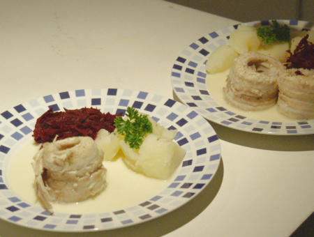

| Zutaten für 4 Personen: | |
| 600g | Kartoffeln |
| Salz, Pfeffer | |
| 600 g | Rotzungenfilets |
| 500 g | rohe Randen |
| 20 g | Kochbutter |
| einige Tropfen | Himbeeressig |
| 5 dl | Court Bouillon |
| 1 Tl | Maispuder = Maizena |
| 1 dl | Rahm |
| 2-4 El | frisch geriebener Meerrettich |
| Kresse zum Garnieren | |
Salzkartoffeln in Salzwasser gar kochen.
Fisch würzen und aufrollen.
Randen raffeln, in Butter dünsten, Essig, Salz und Pfeffer beifügen.
Fisch in der Court Bouillon ziehen lassen.
Herausnehmen und die Hälfte der Brühe absieben.
Maispuder in etwas Wasser anrühren, mit der Brühe aufkochen und Rahm und Meerrettich beifügen.
Anrichten: Sauce in den Teller. Fisch darauf und Randen und Kartoffeln dazu legen. Garnieren.
Migros Rezepte vom Küchenchef, Broschüre
Schmeckte am 31.12.2003 in Johannesburg für 2 Personen sehr gut. Ich verwendete Sole was vielleicht der richtige Fisch ist. Es war allerdings nicht Filet sondern 2 Filets am Fisch mit Gräten dazwischen. Entsprechend waren es nicht so enge Rollen.
@LINKBACK_TAG@ @WAKELOCK@